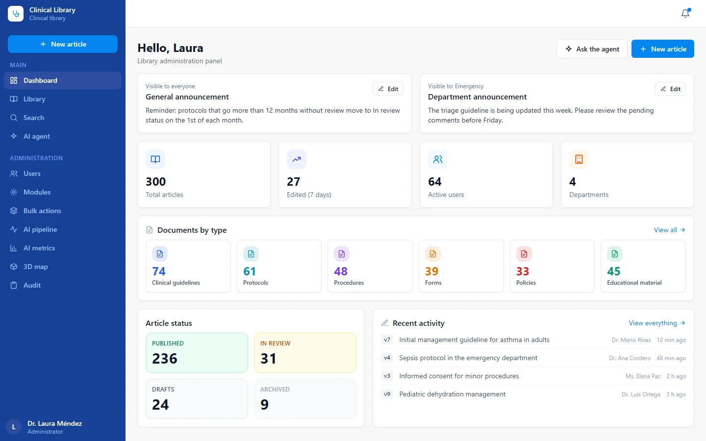
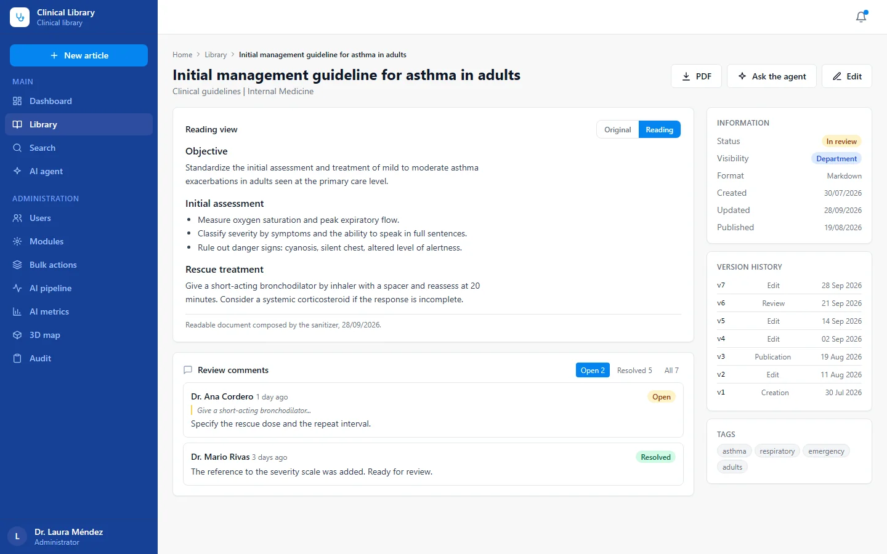
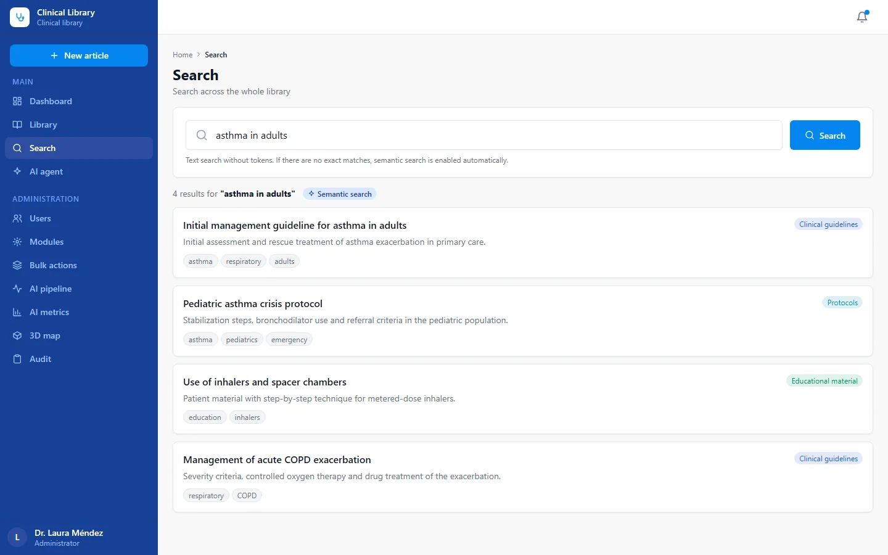

Clinical knowledge library
Single source of truth for medical and protocol guidance at a national public telemedicine service, in two generations: a first version on Google Apps Script and the current version on Google Cloud with retrieval-augmented answers.
- 200 to 1,000articles
- 400+physicians as users
Current version in use. Figures as reported in 2026. See the screens
Problem
Physicians need one authoritative place for every medical action and protocol. Without it, staff follow different versions of a procedure, and the quality team has no way to enforce a standard. At this service, not consulting the library is treated as non-compliance and is flagged by the quality team.
So the library has to be standardized, current, easy to search and trustworthy: a physician who asks a question must get an answer that comes from the approved articles, with its source, and not from memory or improvisation.
Solution
Version 1 (Google Apps Script, first version). A web app with a React single-page front end, Google Sheets as the database and Drive for source files. It delivered the editorial cycle end to end: publish and update articles, review with internal comments, version history, type and tag taxonomy, bulk import from spreadsheets, a dashboard, and email and chat notifications. About 2,400 lines of Apps Script back end.
Version 2 (current, Google Cloud). A NestJS back end with PostgreSQL and vector search, a React front end, and a retrieval-augmented assistant.
- Articles follow an editorial workflow (draft, needs review, published, archived) with automatic versioning, review comments and immutable slugs.
- Access by role and by department, plus per-article visibility (public, department, restricted), applied consistently to search and to the assistant.
- Two separate paths: fast text search that consumes no AI tokens, and an assistant that is invoked explicitly. The assistant chunks published articles, retrieves the relevant passages and answers from them with sources.
- A curated question bank: answers approved by an auditor are stored and reused without calling the model, so common questions become fast, deterministic and free, while new questions are answered by the model and queued for review.
- Bulk import from version 1, notifications by email, chat and webhook, and an audit trail.
Why the migration: Apps Script hit its platform limits, and the service wanted to add retrieval-augmented answers over the article base.
Impact
Figures are ranges, as of August 2026:
- Articles: 200 to 1,000.
- Users: all physicians of the service, more than 400.
- One shared library replaces scattered guidance, and compliance can now be checked against a single source.
Checks recorded in the repository: a repeatable battery against the assistant reported 18 pass, 1 warning and 0 failures on 2026-07-04, and a functional module audit reported 54 of 54 checks passing (docs/verificacion-agente.md).
My role
- Requirement and domain, gathered from the physicians and the quality team.
- Screen design.
- Development with AI assistance, following written plans and decision records.
- Delivery and documentation for both generations, including the migration path from version 1 to version 2.
Stack
Version 1: Google Apps Script (V8 runtime), Google Sheets and Drive, React 18 (UMD build) in a single HTML file, Quill editor, Fuse.js search.
Version 2, versions read from the installed packages:
- NestJS 11.1.17, TypeScript 5.9.3, Prisma 5.22.0.
- PostgreSQL 15 with pgvector (container image
pgvector/pgvector:pg15), embeddings stored as 768-dimension vectors. - Vertex AI SDK 1.12.0 with Gemini 2.5 Flash (default generation model) and a Gemini embedding model.
- React 18.3.1, Vite 6.4.2, Tailwind CSS 3.4.19.
- Jest 29.7.0, Docker, Cloud Run and Cloud SQL as the documented deployment target.
Human in the loop in this project
Evidence paths below refer to private repositories and are shown as plain text.
- The product includes a human gate: a curator or auditor approves each answer before it is reused, and can merge equivalent phrasings (
docs/plan-l3-l4-qabank-curacion.md,docs/arquitectura-determinismo-rag.md). - Written audit of the business logic, with the owner's decisions recorded:
docs/auditoria-negocio-2026-06.md. - Repeatable verification of the assistant:
docs/verificacion-agente.md,scripts/agent-battery.mjs,scripts/module-audit.mjs. - Numbered decisions with reasons:
docs/14-decisiones.md. - Migration procedure:
docs/09-import-y-migracion.md; the retired version 1 source is kept inside the repository as a legacy folder for reference. - Documentation index for anyone joining:
docs/00-indice.md.
Status
Version 2 is the current version and is in use by the physicians of the service. Version 1 was the first version and is retired in favor of version 2. Deployment details are not published.
Screens



Information in these screens has been anonymized.